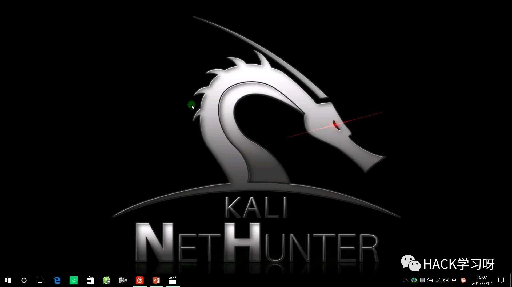
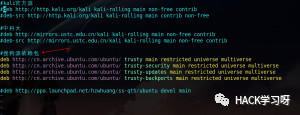
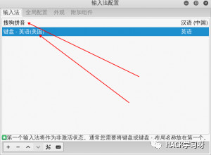
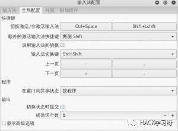
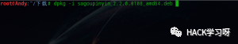

Kali Linux2.0完美一键安装搜狗输入法
 网上很多教程教你如何在Kali Linux下安装搜狗输入法，但是都是有问题的，没有问题的也很麻烦，所以不如来看看我这个吧，简单明了。
网上很多教程教你如何在Kali Linux下安装搜狗输入法，但是都是有问题的，没有问题的也很麻烦，所以不如来看看我这个吧，简单明了。

首先打开vi /etc/apt/sources.list，更换源，记得安装好搜狗输入法后把源换回原来的官方源或者国内源。

deb http://cn.archive.ubuntu.com/ubuntu/ trusty main restricted universe multiverse
deb http://cn.archive.ubuntu.com/ubuntu/ trusty-security main restricted universe multiverse
deb http://cn.archive.ubuntu.com/ubuntu/ trusty-updates main restricted universe multiverse
deb http://cn.archive.ubuntu.com/ubuntu/ trusty-backports main restricted universe multiverse提醒：有其他的源，请先用#注释掉，安装完依赖后再打开，如果没有注释其他的源，下面的安装命令，你可能会出错，然后再安装下面的依赖包
接下来使用apt-get update命令获取软件包清单，然后他会报错，然后你输入下面这条命令，就可以搞定了【注意，如果输入完这条命令一直未响应，请检查你的DNS以及你的网络状况】
apt-key adv --keyserver keyserver.ubuntu.com --recv-keys 3B4FE6ACC0B21F32然后在更新
apt-get update安装fcitx小企鹅以及相关依赖包的命令如下
apt-get install fcitx-libs fcitx-libs-qt fcitx-bin fcitx-data fcitx-modules fcitx-module-dbus fcitx-module-kimpanel fcitx-module-lua fcitx-module-x11 fcitx fcitx-tools fcitx-ui-classic fcitx-config-gtk2 libopencc1然后再去https://pinyin.sogou.com/linux/这个网站下载deb的安装包
下载后，使用dpkg -i sogoupinyin_2.2.0.0108_amd64.deb命令安装就行了，安装好后重新启动【init 6】，会看到一只小企鹅
然后打开小企鹅，安装成功

然后设置输入法切换等等

演示，我是左边的shift切换不同输入法

安装过程中，遇到问题，可以在下方留言评论

小提示：其实依赖包就在我们上面添加的四条源里，安装完输入法后，记得把这四条源注释，换回官方源或者国内源就行，Kali和ubuntu都是基于debian的，所以以后你遇到找不到的依赖的时候，去找找ubuntu的依赖包就搞定了。